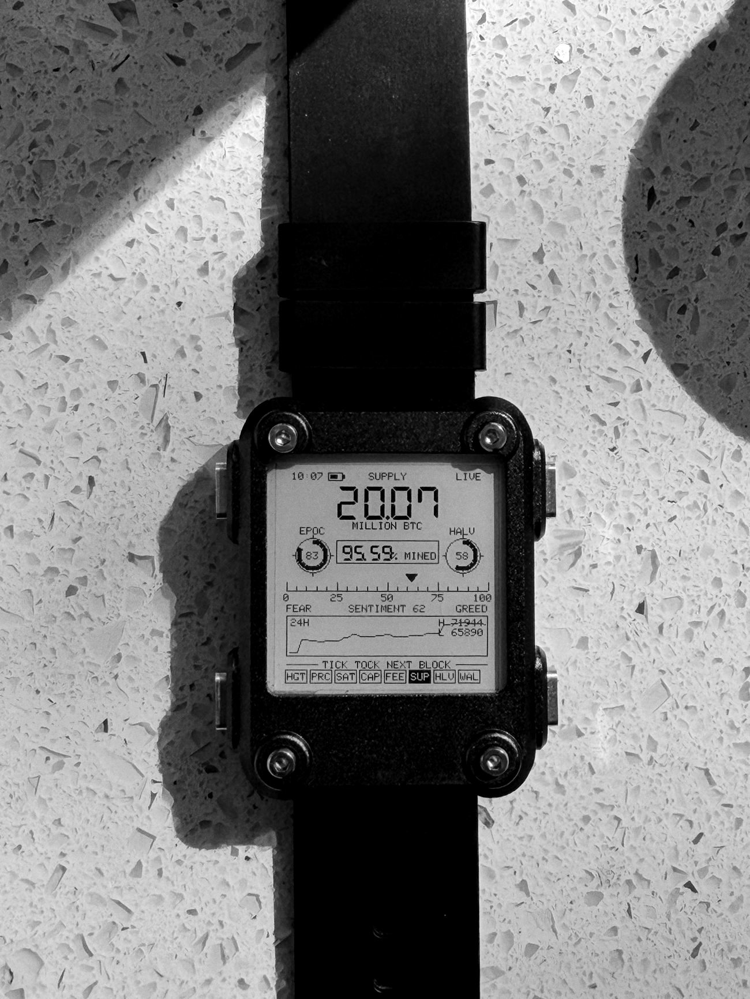
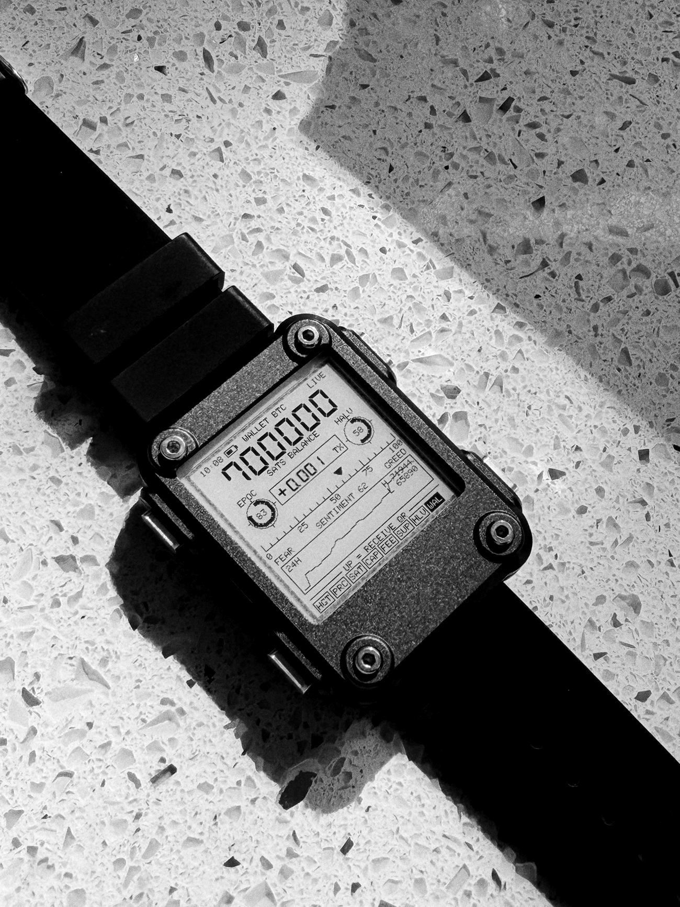
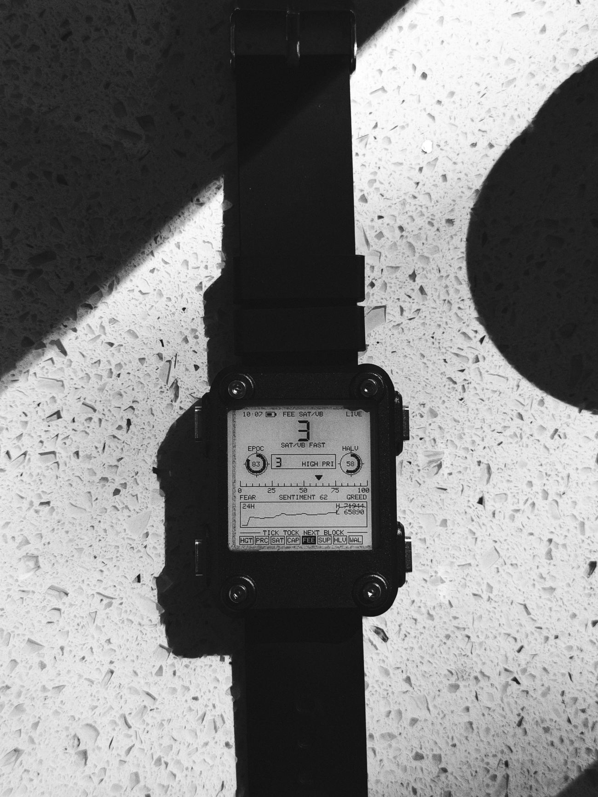
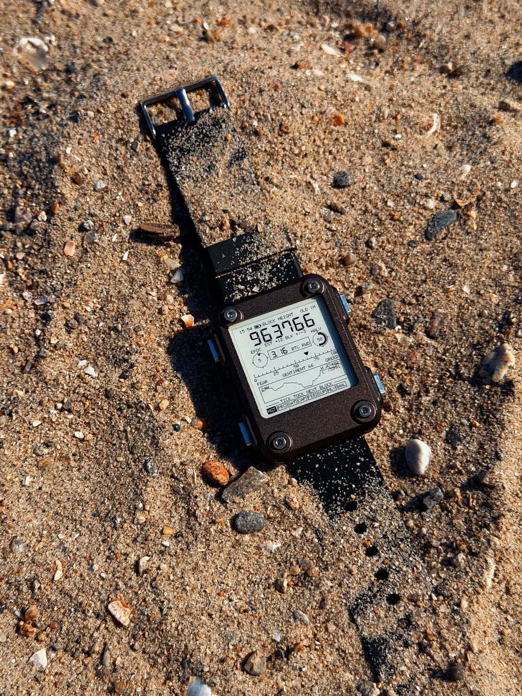
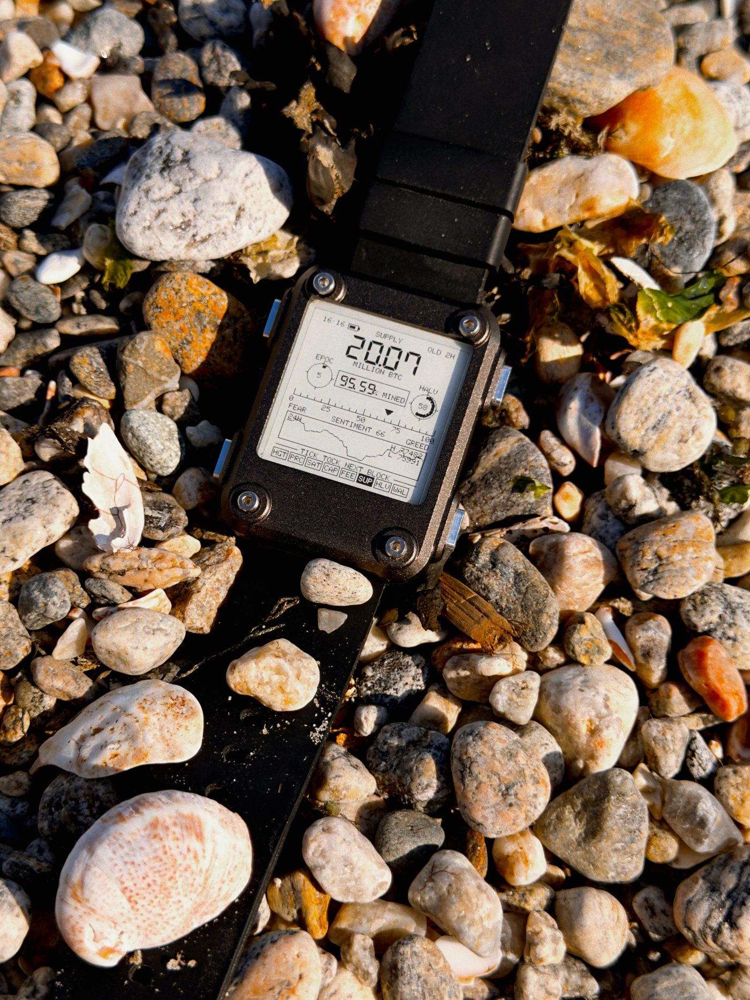
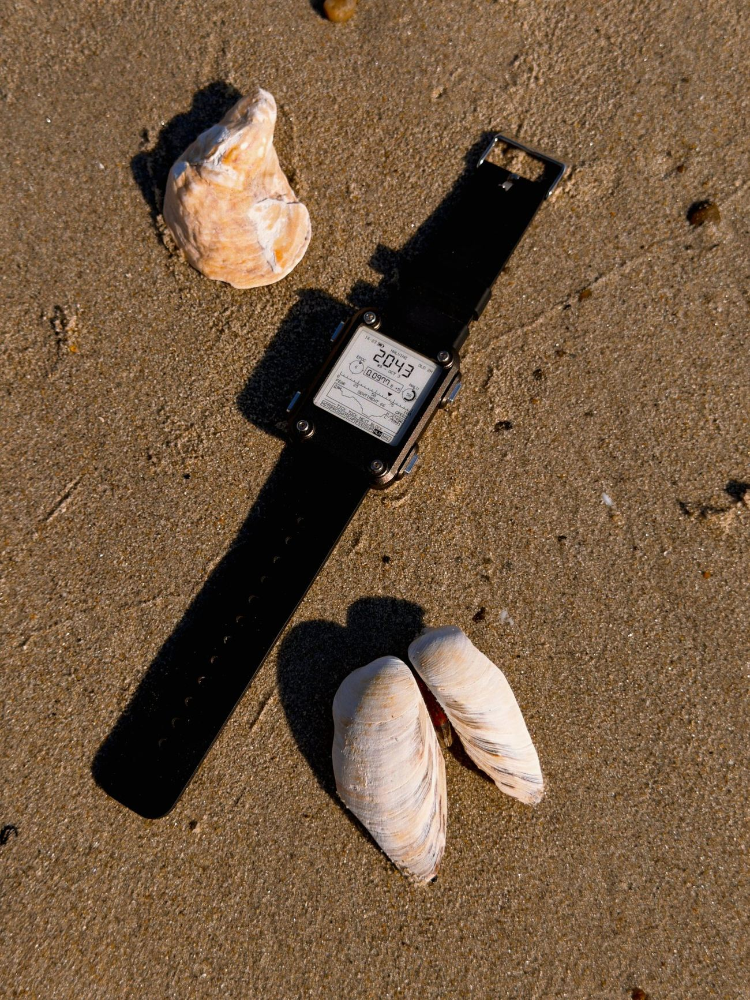
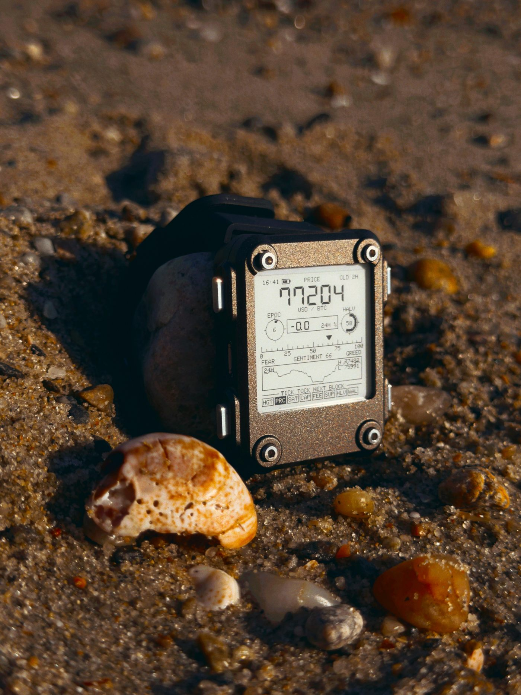

Genesis 21 is the first edition. Further editions to follow.
Say hello@btctech.xyz
00
Abstract
BWATCH is a wearable instrument for the timechain. It shows the
height of the Bitcoin timechain, difficulty epochs, halvings, derives issued supply on-device
from the block height, carries a watch-only wallet that holds no key, and vibrates once for every block the
network finds — roughly one hundred and forty-four times a day. At the moment this page
loaded, the tip stood at ······.
01
Introduction
Every watch keeps somebody's time.
Conventional timekeeping rests on a schedule maintained by parties who may adjust it, and
which the wearer is required to trust. Bitcoin keeps a different clock: proof of work, one
block at a time, at an average interval held near ten minutes by difficulty adjustment. That
clock has produced a block roughly every ten minutes since January 2009, without an
operator and without permission.
It has never been early. It has never been late. It has simply continued.
This is a watch for that clock. It is not a smartwatch. No apps, no notifications, no
account, no cloud, no opinion about your step count. Nine instrument modes, four buttons, and
one job: to put the state of Bitcoin on your wrist.
02
The instrument
Nine modes. One face.
HGTblock height, with the last block's reward, the pool that found it, the retarget
estimate, the chain's measured minutes per block, how long the current block has stood, and
the mempool backlog.
PRCprice, in six currencies.
SATsatoshis per unit of fiat, with Moscow Time in the box.
CAPmarket capitalisation, and what share of gold's it has taken.
FEEsat/vB at high, medium and low priority, to two decimals — a quiet mempool runs
below one sat per byte, and 0.25 is not 0.
SUPevery coin issued and every coin still to come, to the hundredth, derived
on-device — one climbing, one falling, both stepping on each block.
HLVthe halving almanac: dates and subsidies for the next six halvings.
WALbalance, receive QR, Lightning QR, and the last payment received. Hold DOWN to
hide the numbers.
JOEtime, day, date. Nothing else — for when you would rather not be asked what
you are wearing.
The grammar is deliberately small. MODE selects the instrument, UP turns its crown.
Every reading is live, computed on-device, or explicitly labelled stale. The watch never
displays a number it cannot defend.
FIG. 1 PRC mode. 71,691 USD per coin, up 8.6% on the day. Six currencies sit on the dial.

FIG. 2 SUP mode. 20.07 million issued, 95.59% of all there will ever be — arithmetic the watch performs itself.

FIG. 3 WAL mode. 700,000 sats, and a receipt for the payment that arrived while the watch was watching.

FIG. 4 FEE mode. 3 sat/vB at high priority; the dial steps down through medium and low.
03
Claims
Measured, not promised.
Block height
On a network the height is exact — fetched, not inferred, and refreshed every fifteen
minutes. Off it, the watch falls back to dead reckoning: it counts forward at the epoch's
measured block time, and the face
stops claiming to know the tip — the unit line becomes an estimate with its own error bar,
EST +36 BLK +/-6 after six hours offline. Blocks arrive as a Poisson process, so the
uncertainty grows as the square root of the blocks estimated: six hours of guessing is
thirty-six blocks and about six of error, a full day is one hundred and forty-four blocks
and about twelve. The watch would rather show you the size of its ignorance than a confident
number that is quietly wrong.
Payment detection
Press UP in wallet mode and the receive QR appears — a watch-only wallet cannot spend, but
it can be paid. The watch then stands watch for two minutes, polling the address it just
showed, and buzzes the moment sats land. This works even in a parking lot at 1.3% battery.
Lightning
LNURL-enabled: press UP again and the watch requests an invoice from your Lightning
address, renders it, and polls for settlement. Where the provider supports LNURL-verify it
buzzes three times within seconds of being paid.
Supply
Computed on the watch from block height alone. No API is involved; the height is the calendar.
Privacy
Hold DOWN in wallet mode and the balance and last payment go behind dashes. The receive
QR still works — being paid is not the private part.
Clock
v3 has no dedicated real-time clock, just the ESP32 and a crystal, and it ran about three
minutes fast a day. The watch now re-anchors to network time every six hours on the back of
a fetch it was making anyway, so the error stays under a minute.
Keys
Watch-only, from a zpub. It derives addresses; it cannot sign. Losing the watch loses nothing.
04
Editions
Two editions. Both made to order.
Both are open now. Genesis 21 is twenty-one units in orange anodised aluminium, machined and
finished in a single batch, numbered 1 to 21; each caseback is engraved with its number and
the block that confirmed its payment, so every watch is a timestamp of its own purchase. When
the twenty-one are gone they are gone. The standard edition is natural bead-blasted aluminium,
unnumbered, running the same firmware and carrying the same instrument.
Genesis 21 — 1,000,000 sats
Orange anodised, numbered, block-engraved caseback. Twenty-one units, then never again.
Three weeks lead time.
Standard edition — 500,000 sats
Natural bead-blasted aluminium, unnumbered. Built in batches as orders come in.
Four to six weeks lead time.
Drawings by SQFMI, from the
Watchy open-hardware documentation, reproduced under
its licence.
06
Field log
Twenty-five faults, all found by wearing it.
None of these appeared on a bench. Each one turned up in ordinary use — on a wrist, in a
parking lot, halfway through a purchase — which is the argument for wearing a thing you intend
to sell. A product page that only lists features is hiding something, so here are five, in
plain terms.
01The calendar was nine years wrong. The clock kept perfect time, so
nothing looked amiss. It surfaced only when the halving almanac — which projects future
halvings from today's date — announced that the 2028 halving would happen in 2037. The watch
now re-anchors its clock to network time every few hours.
02The balance was missing my change. After spending from the wallet,
the watch reported far less than it should. It was scanning the addresses that receive
payments, but not the separate branch where a spend's change comes back — so the change was
invisible. It now walks both.
03It froze while checking the wallet. A balance check can query sixty
addresses in sequence, and nothing was listening to the buttons while it worked. Pressing
MODE did nothing until it finished. A press now cancels the scan and does what you asked.
04It claimed to be LIVE when it wasn't. The face marked data fresh for
a full hour, though it refreshes every fifteen minutes — so three failed updates in a row
still read as current. It now says LIVE for twenty minutes, then states the age in
minutes.
05The battery would not charge — except it was already full. It sat
at 71% through a night, a day, and a wall charger. Three explanations were wrong before the
right one: the library's constant for reading the battery pin does not match this board, so a
full cell reported 3.92 V and the watch believed it. It now learns what full reads on the
board it is fitted to, once, and works from that.
06The block height ran ahead of the chain. Between fetches it counted
forward at the chain's measured pace, so the number climbed a block at ten minutes and fell
back when the next fetch disagreed. A block counter that goes backwards is worse than one
that lags, so it now shows what it was told until an update has actually failed.
07One dial moved everything. All eight modes shared a single dial
position, so stepping through fee priorities silently wound the halving calendar forward by
two epochs. Each instrument now remembers its own.
07
The shore
Shell money, and a chain that doesn't need you.
An afternoon at the tideline, because a watch that only ever appears on a countertop is a
watch nobody has actually used. Shells were money long before coins were: valuable while they
were hard to gather, worthless once they weren't. The sand is the other half of the argument —
the chain keeps counting whether the instrument is on a wrist, in a drawer, or half-buried and
ignored.

FIG. 7 Block 963,766, read through the dust. The chain does not
need the watch, or you, or anyone's attention. It counts either way.

FIG. 8 20.07 million issued, among a few million pebbles.
Only one of these was ever scarce by arithmetic.

FIG. 9 Shell money was the first money, and it failed for the
reason all money fails: it became easy to get. Twenty-one million, and no shore to gather
more from.

FIG. 10 16:41, propped against a stone, two hours out of network
range. The corner reads OLD 2H — the watch would rather admit the number is stale
than quietly pretend it is current.
Firmware and this page are MIT licensed. Build your own: everything is on
GitHub, free, forever. The editions are for people who would
rather have one made.
No cookies, no trackers, no accounts. This page is one hand-written file.